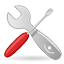
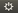
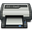
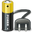
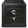

GNOME3 Systemeinstellungen
Dieser Artikel wurde für die folgenden Ubuntu-Versionen getestet:
Ubuntu 14.04 Trusty Tahr
Zum Verständnis dieses Artikels sind folgende Seiten hilfreich:
 Ubuntu setzt intern auf GNOME 3 statt auf GNOME 2, während für die Oberfläche Unity zuständig ist. Mit dieser Umstellung wurde das gnome-control-center zur zentralen Komponente zur Systemeinstellung unter Unity und der GNOME Shell. Dieser Artikel gibt einen Überblick der vorhandenen Funktionen.
Installation¶
Unter Ubuntu und Ubuntu GNOME sind die Systemeinstellungen bzw. das folgende Paket bereits vorinstalliert:
gnome-control-center
Systemeinstellungen¶
Man gelangt in die Systemeinstellungen, indem man entweder in der Sitzungsanzeige  den Menüpunkt Systemeinstellung benutzt oder folgenden Befehl ins Terminal bzw. die Dash eingibt:
gnome-control-center
Die Systemeinstellungen sind in drei Kategorien unterteilt.
"Persönlich" - hier kann man die Einstellungen für den eigenen Benutzer ändern, wie zum Beispiel das Aussehen der Oberfläche, die Tastenbelegung und die Sprache
"Hardware" - in dieser Kategorie sind alle Einstellungsmöglichkeiten zu finden, die die Hardware des PC beeinflussen. Beispielsweise die Monitorauflösung, die Druckereinstellungen oder auch die Grafik-Tablett-Einstellungen.
"System" - beschäftigt sich mit Einstellungen, die das komplette System betreffen, wie z.B. Uhrzeit, Backup oder Benutzerkonten
Die folgende Liste soll einen kurzen Überblick geben, wo welche Einstellungen zu finden sind:
Persönlich¶
| Persönlich | ||
| Icon | Schaltfläche | Beschreibung |
| "Helligkeit und Sperren" | Zeit einstellen, wann der Bildschirm abgeschaltet wird und ob dieser dabei gesperrt werden soll. Quasi als Ersatz für einen Bildschirmschoner. | |
| "Hintergrund" | Thema der Oberfläche und Hintergrundbild ändern. | |
 | "Online-Konten" | Einstellen, welche Aktivitäten durch Zeitgeist aufgezeichnet und ob anonyme Daten an Canonical gesendet werden dürfen. |
| "Region und Sprache" | Anzeigensprache, Formate, Eingabequellen und Systemeinstellungen. | |
| "Sprachen" | Spracheinstellungen, in der man die persönliche Systemsprache und weitere länderspezifische Einstellungen wie Anzeigesprache, Datum-/Zeitformat, Währung, Einheiten einstellen kann. | |
Hardware¶
| Hardware | ||
| Icon | Schaltfläche | Beschreibung |
| "Anzeigegeräte" | Die Bildschirmauflösung des Monitor ändern. | |
| "Bluetooth" | Bluetooth-Verbindungen aufbauen und verwalten. | |
|  | "Drucker" | Drucker einrichten und verwalten. |
| "Farbe" | Monitor- und Drucker-Kalibrierung. | |
| "Klang" | Soundkarte via PulseAudio konfigurieren und Lautstärke ändern. | |
|  | "Leistung" | Einstellen, nach wie vielen Minuten der PC in den Bereitschaftsmodus wechselt und ob der Akkuzustand in der Menüleiste angezeigt werden soll. Siehe auch Strom sparen. |
| "Maus und Touchpad" | Die Empfindlichkeit von Maus und Touchpad konfigurieren. | |
| "Netzwerk" | Netzwerkverbindungen mit Hilfe des NetworkManagers erstellen und konfigurieren. | |
| "Tastatur" | Tastatur einrichten und Tastenkürzel festlegen. | |
| "Wacom-Grafiktablett" | Empfindlichkeit des Tabletts, Belegung der Tasten und Bildschirmzugehörigkeit für Wacom-Tabletts einstellen. | |
System¶
| System | ||
| Icon | Schaltfläche | Beschreibung |
| "Benutzer" | Benutzerkonten bearbeiten (z.B. ein neues Passwort festlegen) und neue Konten hinzufügen. | |
|  | "Datensicherung" | Eine automatische Datensicherung mit Hilfe von Déjà Dup einrichten. |
| "Datum und Uhrzeit" | Systemzeit (Zeitzone, Uhrzeit und Datum) einstellen und festlegen, ob die Uhrzeit mit dem Internet synchronisiert werden soll. | |
| "Informationen" | Die Übersichtsseite gibt Auskunft über Prozessor, Grafikkarte, RAM und Art des Betriebssystems. Zusätzlich kann man die Standardprogramme wählen und einstellen, wie Ubuntu mit Wechseldatenträgern umgehen soll. | |
| "Zugangshilfe" | Einstellungen, um einen barrierefreien Zugang zu ermöglichen. | |
Links¶
Benutzer- und Systemeinstellungen
 - Ubuntu-Leitfaden 12.04
- Ubuntu-Leitfaden 12.04Ein Farbprofil des Monitor erstellen…
- Blogbeitrag 11/2012
- Erstellt mit Inyoka
-
 2004 – 2017 ubuntuusers.de • Einige Rechte vorbehalten
2004 – 2017 ubuntuusers.de • Einige Rechte vorbehalten
Lizenz • Kontakt • Datenschutz • Impressum • Serverstatus -
Serverhousing gespendet von